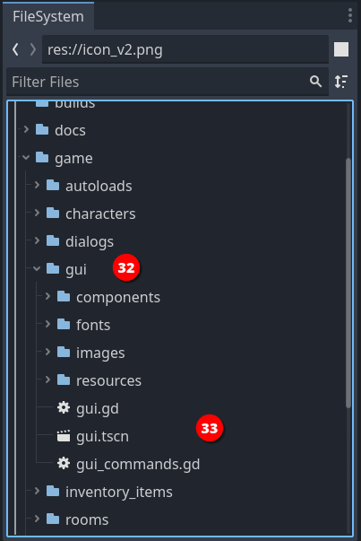
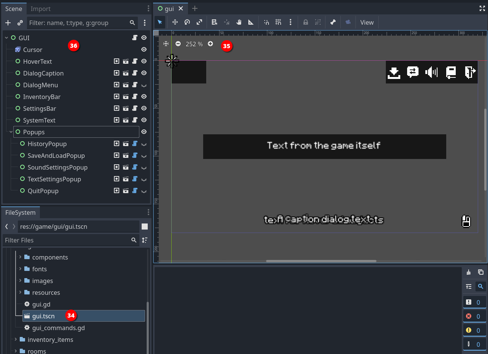
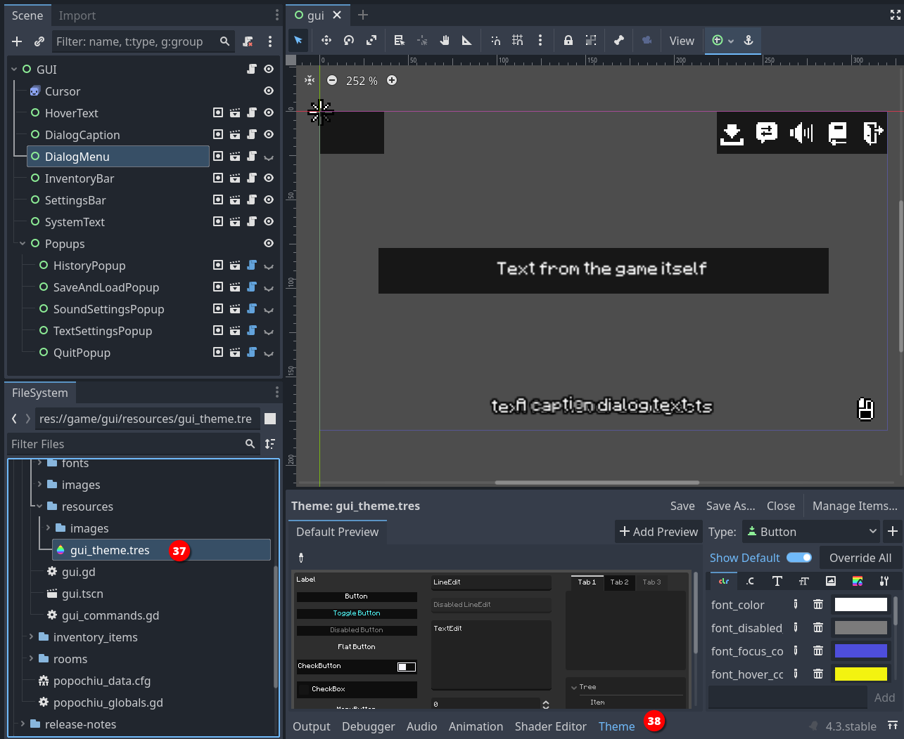
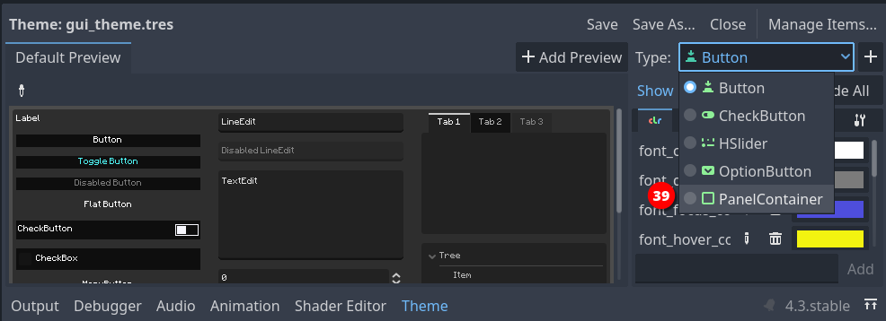
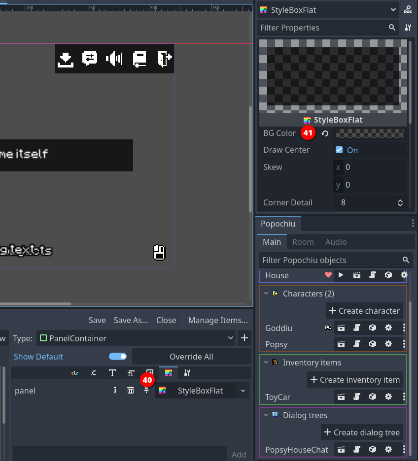
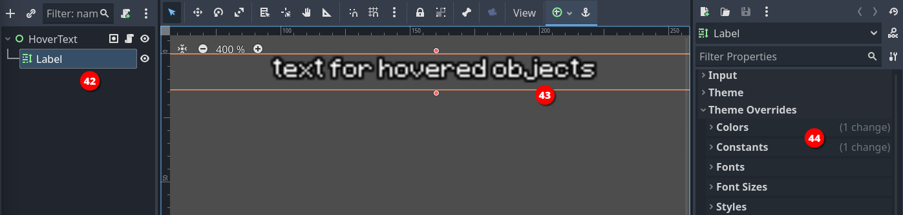
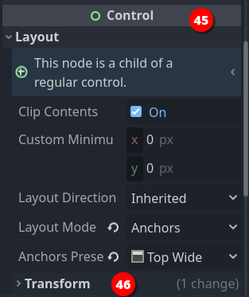
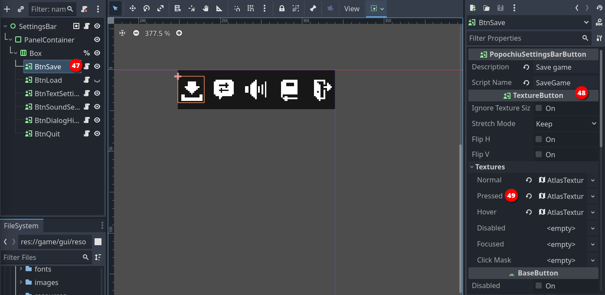
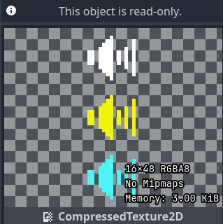
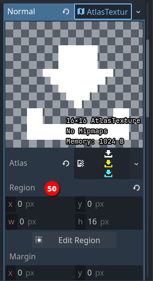

Customize the Game UI
Disclaimer
GUIs are an important part of the player's experience and, among the many aspects that all adventure games have in common, it's the one that tends to get more customization and personal touches.
The variety in the GUIs panorama makes them a complex topic, one that requires dedicated effort and some solid Godot-related skills to give good results.
We will eventually provide a complete guide for custom GUIs that will cover every aspect, but this is out of the scope of this tutorial, at the moment.
Is that a wrap? Not yet! We are missing one very important bit: the User Interface for your game (GUI).
When you think about an adventure game, the first thing that comes to your mind are the elements of the story: interesting characters, challenging puzzles, the visual style... those are the things that every adventure game, from the seminal King's Quest to the last Syberia act, have in common.
But what differentiates your experience as a player beyond the game content, is how you interact with the game.
For this last chapter of our Getting Started guide, we are going to explain the basic concepts and anatomy of a Popochiu game's interface and show you how to customize the appearance of one of the predefined GUIs.
Note
As we noted back in the Game Setup chapter, Popochiu provides different GUIs you can use in your game, and more will be added in the future.
The concepts we'll explore in the upcoming paragraphs apply to every current and future GUIs, but - per the considerations above - applying them to different GUIs may be non-straightforward and require a bit of fiddling and understanding. Be ready to roll your sleeves and don't forget to ask for help in our community.
Anatomy of a GUI in Popochiu
When you setup a new game, Popochiu creates a directory named gui under your game folder (32).
The content of this directory is a configured copycat of a template that contains the base GUI, which sits in the addons/popochiu/objects/graphic_inerface and must be left untouched!

Everything you need to configure your GUI is in the game/gui directory.
The most important files (33) are:
gui.gd: this script contains the wiring logic for the interface. Usually the bulk of it is made by functions to process signals triggered by the UI element.gui.tscn: this scene holds all the interface elements and it's initialized by the engine when the game starts. The elements in the scene are put on a dedicated layer to make them accessible.gui_commands.gdscript: this very important file holds the declaration of the GUI commands, a concept that Popochiu implements to make processing events coming from the GUI easier in the game scripts.
A brief about Commands
This tutorial won't go deep into the topic of Commands. Also, the 2-Click Context Sensitive interface is very light on Commands implementation because of its very nature.
Feel free to jump this info box if you just want to customize the interface appearence.
A quick way to understand commands is this: think of the Lucas 9-Verbs interface, the Sierra SCI interface, and the "Sam & Max" or "Broken Sword" icon-based interfaces. All are very different in shape, but they have in common that you can select an action to perform when you interact with a game object.
For example, you can Pick up an item; you can Examine or Talk to a character; Use, Push or Give an object; Walk around and so on.
Commands are just this, a set of valid actions that are exposed by your interface, that can be attempted on every clickable game object (inventory items, props, characters, hotspots).
Unlike almost every single Adventure Game Engines out there, Popochiu makes no assumption on those valid actions but instead, gives you a framework to:
- Register the Commands you need (you decide which ones)
- Activate them by your GUI elements (you decide the wiring)
- Trigger them by clicking on a game object
- Process different logic in your game scripts, depending on the triggered command
Granted, this requires a bit of work when you design the interface, but the lack of assumptions won't make you jump through hoops because of design choices made by the wrong people: us!
The GUI scene
If you open the gui.tscn file (34), you will see the SimpleClick GUI's scene, that's made like this:

As mentioned, a single scene contains all of the GUI elements. You can see them arranged in the scene editor (35), and how they are organized in the scene tree (36).
GUI Elements overview
The scene file, as well as the command and script ones, will differ quite a lot between different scene templates.
There is nothing that's inherently mandatory in every single interface, and this is both good and bad news. Good, in that you can go wild with every interface idea you can dream of - no constraints. Bad in that there are little rules to follow when creating custom GUIs.
All the provided interfaces though, share some common and usually necessary elements:
-
The Cursor node is there to hold the animations used by the actual mouse pointer.
Warning
At the time of writing, this is NOT the actual cursor that will be shown by the engine. Popochiu will just rob this node of its animations but will ignore all the other properties. For example, changing the size or modulation of this node, won't affect the cursor at all.
We plan to change this in the future, for convenience. -
The DialogCaption is the element that will show what the characters say in the game. This node has its scene, that provides a configurable set of variations, like "above the head" text, to text panel, with or without a character portrait, to caption text displayed at a fixed position.
- The DialogMenu is the panel on which you select the dialog lines. This can be changed to an icon bar (as in "Sam & Max Hit the Road") or any other stuff, but it's pretty common in its basic form (scrollable list of phrases).
- The Popups: conveniently grouped under their control parent, are those "in game" windows used to save and load games, configuring settings, maybe displaying the inventory, and otherwise showing messages to the user.
Other elements are specific to this interface, like the InventoryBar and SettingsBar, that in the SimpleClick interface, appear on top of the screen when hovered with the cursor.
In more graphically "explicit" (and cluttered) interfaces, like Sierra and 9 Verbs, you can find more elements, arranged in different order. For example the verbs panel and the inventory grid are pretty complex elements in the 9-Verbs UI, while the inventory appears in a grid overlay in the Sierra one.
Under the hood
To guarantee a strong degree of decoupling, the GUI elements are wired to the rest of the game with signals. The logic to process those signals is in the gui.gd script of every interface.
We are not going to detail this now, but those who are skilled in programming (or who feel more adventurous) should feel free to take a look.
How to visually customize your GUI
Now that we have a broad idea of how a GUI is organized, it should be easy to recognize the various elements in the running game.
Customizing them requires a bit of exploration though. Because of the way Godot manage the visual style of controls, there is nothing like a "single source of truth" for how an element appears.
The good news anyway is that Popochiu does it's best to reason in a "cascading" way, setting the standard with a base theme and overriding only what's necessary in the single elements.
Tip
We tried to be as clear as possible. If you get lost in this section, you may want to go learning some bits of Godot that will make everything easier to follow:
We strongly suggest you take the time to learn about Godot theming and skinning concepts, as well as gain confidence with the theme editor to make the most out of this tutorial.
The GUI styling cascade
1. Theme
If you try our the various GUIs that Popochiu provides out of the box, you will notice that they share a common style: transparent black panels, a single font for every button and label, some custom control like check buttons, sliders, etc.
These features are all defined in a base theme, that Popochiu makes available to you at game/gui/resources/gui_theme.tres. Double-click it in the file system (37) tab to open the Godot theme editor (38):

From here, you can set a large number of properties for each Control node. For example, let's change the color of the panels to a bright, translucent red.
Info
If you're new to Godot GUIs, when we mention Control nodes, we mean all nodes that inherit from the Control node-types. These node types are all dedicated to implementing your game user interfaces. Popochiu leverages these node types, not reinventing the wheel, and extends them to create convenient variants.

The Type dropdown contains every node type for which this theme specify a style. What's not mentioned here is simply rendered with the default Godot theme. You can see the list of custom controls is pretty short. Not much is needed for an adventure game, usually!
Select PanelContainer node type (39), to see the theme rules that apply to that node.

Each node has the same set of tabs in the property areas. Some will apply and some will not, depending on the node type (for example, setting a font for an element which renders no text won't be possible).
We are going to open the Style tab and we'll find out that a custom style is applied to the panel property already (40). The value is of type StyleBoxFlat, an object that represents a (you don't say?!) flat-colored area.
As every other Godot resource, clicking it opens the inspector. You can find the BG Color property right on top of it. Change it to a bright red and see what happens in your GUI scene.
You can test your game too, if you want to lose some diopters.
Warning
Don't forget to Save your theme, by clicking the button at the top right of the Theme Editor!
2. Theme overrides
The base theme sets a standard for colors, fonts, margins and alignments, but GUI elements has this tendency to be very contextual. They may need some touches to their look depending on where they appear.
For example, some buttons may need a bit more margin around their content, or maybe they need to be rendered without their translucent black background in a specific position.
For that, the best option is resorting to Theme Overrides. These are settings that apply not to a node types, but only to a specific node in a scene.
One example is the HoverText scene in the SimpleClick GUI. Open the scene and you will see that the Label node therein (42) gets rendered with a nice text outline (43), which is nowhere to be found in the gui_theme.tres.

This is needed because that element may be rendered anywhere on the screen, sometimes over the mouse pointer, to represent hotspot, props or character names, so the white label can get unreadable on a bright scene background. Putting a high-contrast (black) outline will make it always stand out enough.
Since this property is very specific to this node, we set it as a theme override (44). Godot highlights the properties sets that are subject to a change. Go and see yourself how we set up that specific outline.
Remember to do this when you have an element that should not behave as the standard ones.
3. Controls layout
Each Control node has a very convenient set of properties under the Layout category in the inspector.

While a theme sets the visual aspect of controls, it's on the layout of each single control that you define its behavior in relation to the surrounding elements.
Do you want a button to shrink to the minimum possible size and align to the center-left of its container? Do you want to set a minimum size for the button so that if the context gets cluttered, it won't become unreadable? Or maybe you want it stuck in a specific position on the screen? That's where you define such behaviors.
Make sure you review the official documentation to fully understand how to use these properties.
4. Textures and atlases
Some elements, like the mouse cursor, or some menu buttons, are rendered as images. The most evident example in the SimpleClick GUI is the SettingsBar element.
Open the scene and you will see that each button (47) is a TextureButton node (48).

Note
In this very case, the nodes are of type PopochiuSettingsBarButton because we needed all of them to have a couple very specific properties, but you can see in the inspector that they are TextureButtons too.
As you can see, the textures applied to the Normal, Pressed and Hovered states for the buttons are of type AtlasTextures. That's because the icons PNG are saved as a tileset, with each state of a specific color:

An AtlasTexture allows you to specify a specific region (50) of this source file, so you hold all the same icons state together and your file system stays tidy:

You are not forced to use an Atlas or anything else than a simple texture for your elements.
Actually, if you don't like the standard button icons, and want to change or recolor them, you just have to edit the source PNG files.
Unless you change the size of the single tiles, you will see the updated icons as soon as you save them in your graphics editor of choice.
Note
We didn't mention that here, but if you want to make without a specific function (for example, if you don't want your users to change the text preferences, or see the game action log), you can just hide these buttons in the scene et voilà.
5. Scripts
The last bit of customization are the script attached to each GUI component.
The logic in there really depends on the function and design of the component. That's probably what makes a GUI unique and really change the experience of the player.
Popochiu wire the GUIs and to the Engine events by signals and commands. This architecture ensures a very loose coupling between the GUI and the Engine, that allows for easier upgrades of the engine during the development of a single game.
Also, each element has its short and to the point script, and communicates with others by signals, using the gui.gd script attached to each GUI's root node as a signal bus.
Providing a full list of signals is out of the scope of this guide, but we'll soon provide a reference and a dedicated walkthrough on how to create a custom GUI from scratch.
For the scope of this guide, if you did follow along with this paragraph, you are encouraged to edit and evolve the scripts as you want!
Congratulations! You've got to the end of this introductory guide!